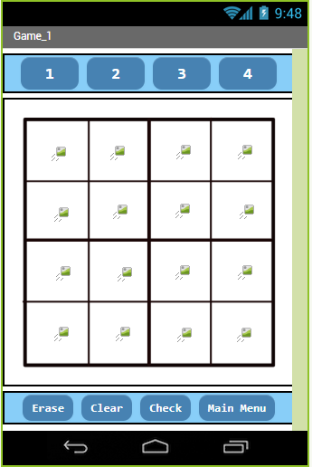
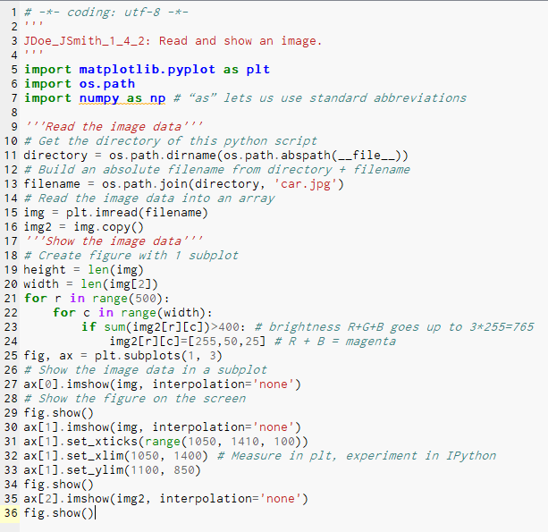

This is my Portfolio Page!

Scratch project to create a game:
This is a game we created using scratch and it is an animal fightning game.
Android app inventer project to create a game:

This is a game we created using android app invneter and it is a sudoku game. The game we created consists of 2 levels: a easy level and a hard level. So enjoy playing it on an android phone or a tablet.
Python project to create a interactive fiction:
We made a interactive fiction with python. This interactive fiction takes place in the future where a wifi bandit comes to steal wifi during an avanlanche. Have fun using it.
Python project to create a game:
The game we created was Rock-Paper-Scissors-Lizard-Spock. We intially created this in canopy in Rico's computer and then we transferred it over to Repl.it just to embed the game in my website. Enjoy playing it against the computer. It is so easy to use, so enjoy!
Python photo editing:
The picture that I edited is a car, and you can see the original and 2 edited images below.

Below is an image of my program code that I used to program this picture edit.
Python create your own GUI project
We did a GUI on a toy car image and made it to shrink, rotate, increase and decrease in the speed stamp. Below you can see part of the code we wrote, and the picture of the output GUI


Python Big Data
How is the GDP of United States and China in relation to the average GDP of the world GDP over time? Below, you can see the code we created and the output that came out as a graph.
Net logo project to edit a project that is already completed.
So we changed the score that is counted for winning a game, and we changed the colors of the block. Below you could see the code before editing and code after editing.
Code before editing
Code after editing
Below you can see the output of the edited program.